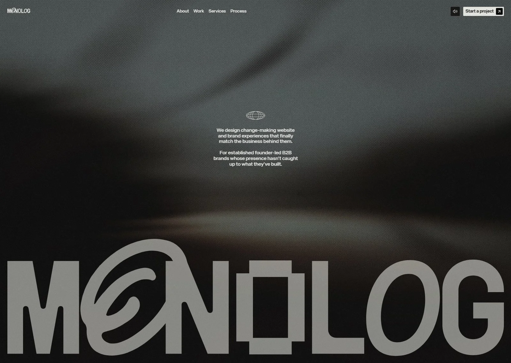

Monolog
- Портфолио
- Агентства и студии
- Дизайн-студия
- Брендинг
- Дизайнерам
- Агентствам
- Маркетологам
- Редакционный
- Минимализм
- Тёмная тема
- Нейтральный фон
- Кастомный курсор
- Микроанимации
- Звук
- Astro
- Umami
- Английский язык
- Австралия
- Действующий сайт

Что это
Сайт студии Monolog, основанной Huy: брендинг и сайты для B2B-компаний. Тёмный зернистый фон, огромное слово MONOLOG, выходящее за нижний край, маленький глобус в центре и короткий манифест. Студия работает из Мельбурна и Ханоя; на сайте есть переключатель звука. Тёмный эстетичный сайт дизайн-студии из Мельбурна и Ханоя. Приятное сочетание ховер-эффектов с саунд-дизайном.
Что смотреть в первую очередь
Провести курсором по навигации и послушать звуковые ховеры; затем посмотреть на огромное MONOLOG внизу.
Приёмы
- Кастомный курсор
- Микроанимации
- Звук
Интересные факты
- Первый экран почти чёрный, с зернистой фактурой; в центре маленький глобус и абзац о брендинге и сайтах для B2B-компаний.
- Огромное MONOLOG внизу обрезано краем экрана — буквы работают как графический якорь страницы.
- Сверху минимальная навигация About, Work, Services, Process, кнопка Start a project и переключатель звука.
- Студия называет себя Monolog и работает из Мельбурна и Ханоя; основатель — Huy.
- На сайте обещаны ховер-эффекты и саунд-дизайн; в коде подключены Astro и Umami Analytics.
- Контакты — hello@bymonolog.com; в structured data указаны два адреса: Мельбурн и Ханой.
Паспорт
- Домен
- bymonolog.com
- Тип сайта
- Портфолио
- Категории
- Агентства и студии
- Подкатегории
- Дизайн-студия, Брендинг
- Для кого
- Дизайнерам, Агентствам, Маркетологам
- Стиль
- Редакционный, Минимализм
- Язык
- Английский
- Страна
- Австралия, Мельбурн
- Автор
- Huy — основатель Monolog
- Год
- не указано
- Добавлен в коллекцию
- 23.11.2026
Палитра
-
#191815— 45% кадра -
#4A5050— 33% кадра -
#898984— 14% кадра -
#373835— 7% кадра -
#D6D9D6— 0% кадра
- Режим
- Тёмная
- Цвет фона
- Нейтральный
Технологии
- Astro
- Umami